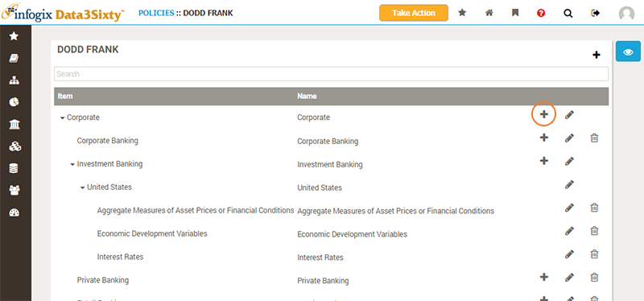
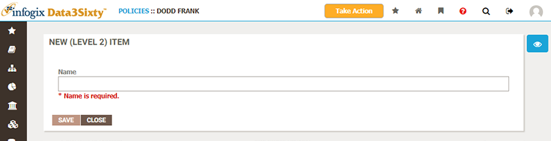

|
|
Creating and editing policies
Creating top-level policies
As with models, the top-level policies or policy classifications used by your organization are typically agreed upon in advance by a group of stakeholders, and can only be created by users with administrator rights. You may find that you are not able to create new top-level policies, and should consider whether you need to do so, or whether you can add a sub-item to an existing policy in your system.
If you believe that a new top-level policy or classification is required, you should typically discuss this with your team of stakeholders to agree upon terms and structure, and then get an administrator of the system to help set up the new item. If you have the administrator rights required to create a new policy asset, or are interested in reading about how to do so, please see the topic Establishing policies.
Editing policies
Depending on the responsibilities assigned to you, you may be able to edit and add new items to existing policies or policy classifications. To start, navigate to the policy you wish to amend. You can add a new child item to a policy asset by clicking the Add button next to an existing asset:

Note: Note that the Add button is missing from some items. This is because a maximum depth is set on a policy, which restricts how deeply nested the policy can become. For example, you can specify that a policy can only ever be 3 levels deep, as above.
Note: You will also notice that the Delete button is not available for all items. This is because you cannot delete items which have child items: you must delete all of the child items first.
The New Item panel appears, allowing you to define the name for the new policy asset:

Note: As with other types of asset, your administrator can define further fields for you to complete when defining a new item. You may be required to provide more information for the policy definitions of your own organization.
You can also Edit existing policy assets. The Edit Item panel allows you to change the name of the policy asset.
Once you have new policy assets in place you will typically want to relate them to other assets, such as Glossary artifacts, in order to capture which policies govern which business terms.
Please see the next topic Relating policies to assets for more details.